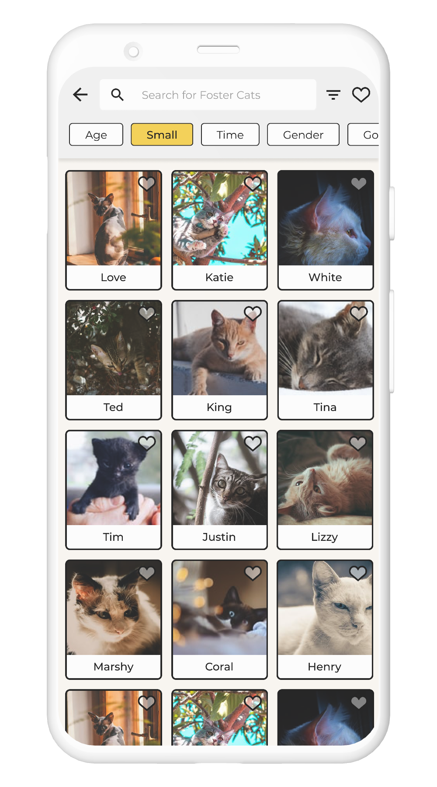
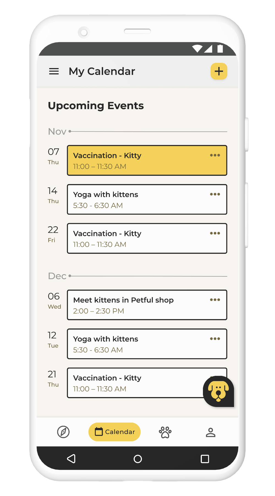
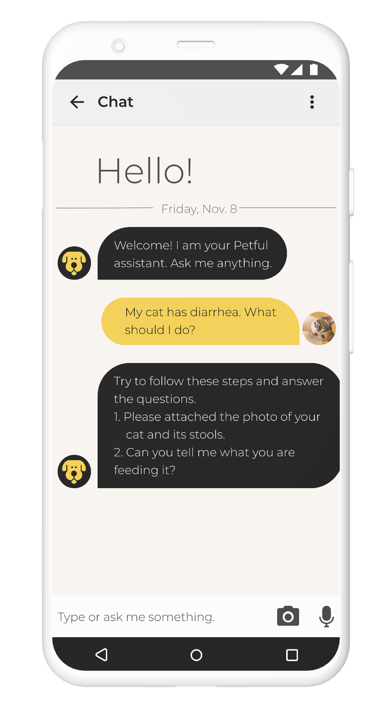

PETFUL
Pet Fostering Assistant
Project aim
Currently, being a pet foster parents in Austin lacks an efficient and organized way to communicate with the animal shelter and seek help when facing with issues. This project aims to provide a solution that builds a bridge between pet foster parents and the animal shelter/organization.
Type
HCI Course Project in a team of three
My Role in the project
UX Research UX Design- Conducted UX research including contextual inquiries, interviews, and affinity diagrams to uncover the problem and generate insights.
- Created persona and user journey map to build empathy with target users.
- Developed wireframe and prototype and verified the design through pilot study and UX evaluation.
PROBLEM BACKGROUND
Scattered information, inefficient communication
Currently, there are no platforms available for pet foster parents. Oftentimes, pet foster parents have to look for information and answers to questions by themselves. Also, the communication mediums between pet foster parents and animal shelters have a wide variety from Google groups, email to phone calls based on the needs.
PREVIEW
One single platform that connects the pet foster parents and animal shelters

Search

Pet Profile

Calendar
